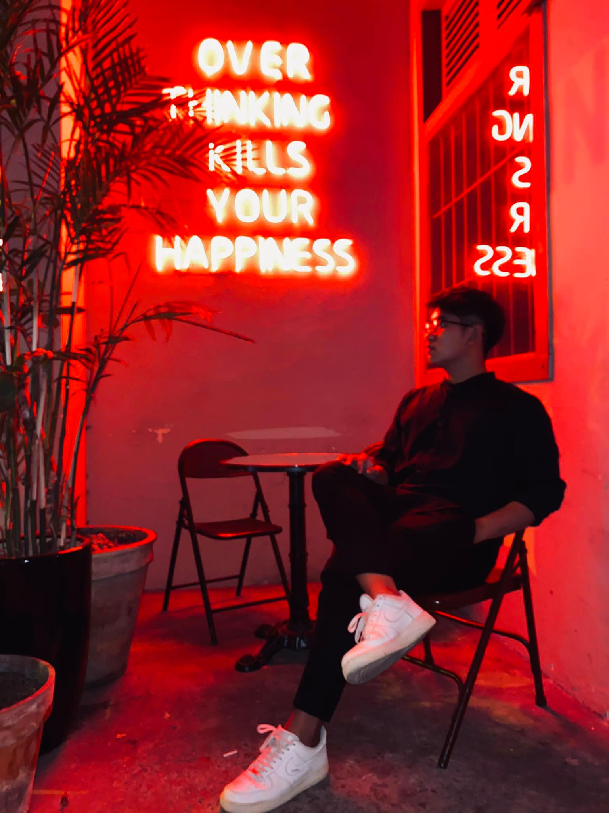

Our team's name is The Fat Guys, which can describe all three of the team's members, and also the founders. Even though two of the members are skinny, we decided to keep the name - The Fat Guys as it allows us to find each other easily.
Through many tests I have taken, I found out that my personality is ENTP, which is Extraversion – Intuition – Thinking – Perception. My learning style is Visual. I see myself as an out-going person that can easily become friends with everyone. Besides, I am a quick-witted person, so I feel comfortable with giving ideas and opinions in every meeting. Energetic is the perfect adjective to describe what I like when I am facing an interesting problem. Aside from those good points, my problems is that I can easily be involved in conflicts, and I sometimes find it hard to focus.
My team have five members in total, which are I – Nhu, Dai, Quang, Duc and Maple. I am the only girl in the group, so sometimes I feel like an outcast, but since I am an extra extrovert, participating in a conversation has never been hard for me.
This is me - s3878533.
Nguyen Khoi Nguyen - s3884511 - INFP. Learning style: Auditory.
Nguyen Duc Dai - s3878023 - ESFP. Learning style: Auditory.
 Tran Hau Duc - s3877327 - ISTP. Learning style: Tactile.
Tran Hau Duc - s3877327 - ISTP. Learning style: Tactile.
Nguyen Nhat Quang - s3863937 - INFJ. Learning style: Visual.
Although we do not share a lot of similarities, I still think my team is perfect. Ever since we met, we always feel super relaxed whenever we talk and share with each other. To tell you the truth, due to the fact that it is our first semester at RMIT, we did not form the team base on our personalities. Nevertheless, our team turned out perfectly, and the more we talk, the more compatible we feel.
My team contains every single aspect to form a perfect personality type, which I believe can lead us to our group’s success. Although three of our members are Introvert, I still acknowledges them as those who are active and sociable. We also share some interests like: sports, board games, online games and Japanese’s culture. And the most fascinating thing about us is that we all find IT interesting.
Three out of five trust in intuition instead of the observation – which is balanced among the group – this helps us to give ideal answers or absolute solutions to any problems.
Three out of five make decision depend on feeling and the other decide with logic. The fact is that, in real life, making decision often requires someone who is level-headed and can make unbiased resolution when standing between logic and consideration. But if there are also people with Thinking and Feeling personality in the group, it will help us to listen as much aspect and opinion about the story as possible in order to find the most satisfactory answer, and it may also help us avoiding conflict in team work too.
Except for Quang, the rest of our team’s personality belongs to Perception. The only difference between Perception and Judgment is that Perception is the way you understand a problem, and Judgement is how you react to the situation. Having both type of people in this feature is also a good thing.
I genuinely think that my team is wonderful. I hope that our project will success.